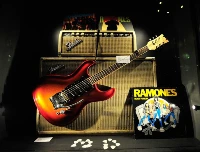
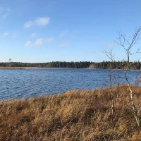
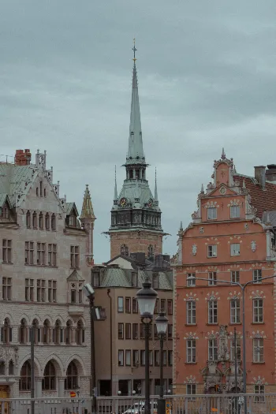
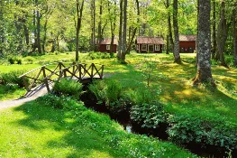
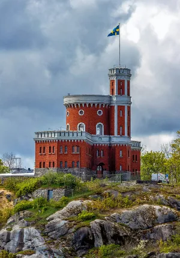
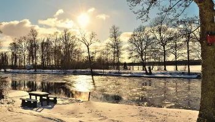
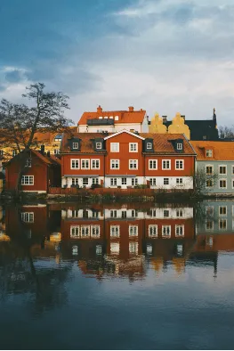
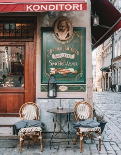

📕municipality is projected to reach 200,000 inhabitants by the year 2050. As a university town, Umeå attracts students and reasearchers in technical, medical, and educational fields.
📕People have been living in for at least 3,000 years!
Climate
Located only 400km south of the Artic Circle, has short, warm summers and long, freezing winters.
2024 Statistics
Population: 133,091
Employment rate: 79.2%
Guitars - The Museum

📷: guitarsthemuseum.com
Visit the iconic collection of rare guitars curated by two Swedish brothers. The collection includes one of the highly sought after Fender Broadcasters, in virtually mint condition, among other gems.
Västerbottens Museum
📷: vbm.se
Learn more about local history with a visit to Västerbottens Museum. Feel free to peruse art exhibits, learn about building tradition and architectural styles, or explore interactive exhibitions about port life during the 19th century in Umeå. There is something for the whole family, and entrance is free!
Grössjön Nature Preserve

📷: tripadvisor.com
Do you enjoy the outdoors? Make your way to one of Umeå's own nature preserves. Here you can find the feeling of wilderness right next to town. Enjoy observing the animal and plant life, or harvest cloudberries from the bog areas.
Welcome!

Stockholm County, Sweden

Nylund-Rörstorp, Jönköpings Iän, Sweden

Kastellet in Stockholm, Sweden

Norrtälje N, Sweden

Uppsala Iän, SwedenNorrbottens Iän, Sweden

Café Nova, Stockholm, Sweden